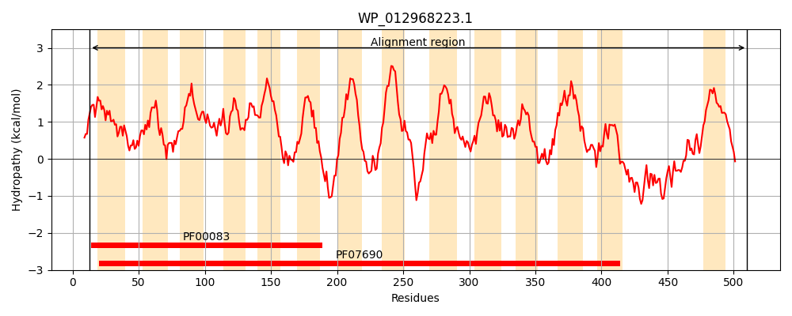
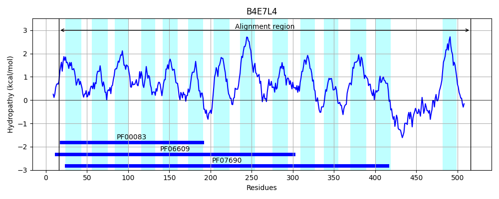
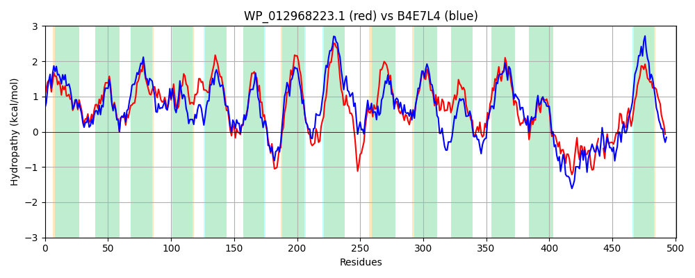

Hit Accession: B4E7L4
Hit TCID: 2.A.1.3.82
Hit Description: gnl|BL_ORD_ID|1869 gnl|TC-DB|B4E7L4|2.A.1.3.82 Putative multidrug resistance transporter protein OS=Burkholderia cenocepacia (strain ATCC BAA-245 / DSM 16553 / LMG 16656 / NCTC 13227 / J2315 / CF5610) OX=216591 GN=BCAL1510 PE=3 SV=1
Mach Len: 501
e:0.000000
Query TMS Count : 14
Hit TMS Count: 14
TMS-Overlap Score: 13.050000
Predicted Substrates:CHEBI:23888;drug
BLAST Alignment:
Score: 1267 , Bit scores: 492 bits, E-value: 4.2e-171, Alignment length: 501, Percentage identity: 48
Query: 13 LFLATLALSLATFMQVLDSTIANVALPTISGNLGVSADQGTWVITSFAVCNAIALPLTGWFTRRFGQLRLFIASVMFFTLTSFLCGFAHSMTELIIFRALQGFFAGPMFPMCQTLLLVIFPPMKRSMALALLSMVTVVAPIVGPITGGWLTDNYSWPWIFYINVPIGIFASIVVWSQLRMREETTQSSPVDYIGIALLVLGVGLLQVVLDKGNDEDWFSSTPIIVMSIVSAISLICFVIWELDERHPIVNLRLFKDRNFAIGTLALMLGYAAFFAINIILPQWLQTQMGYTAIWAGLAAAPMGFLPLVLTPVIGRYATKVDLRILCSVSFLTMGASCLMRAQFNTDVDFRTIASVQMFMGIGVAFFFMPLTTIVLSNLHGNEVAEGSGLATFFRVLGGSFASSLTTWIWQRREVFHHANLTESVTQYNPAAMDYVNKMGG---PTQQHLAMIDQVVTQQAYMMSTIDYFWVLGWGFMALIIIIWFTRPPFVKSGMPGAPAA 510
L L T+A+SLA FM VLD++IANVA+PTISG+LGVS+DQGTWVITSFAV NAI++PLTGW T RFGQ+RLF+AS++ F ++S++CG + ++ L+ R LQG AGPM P+ Q LLL +P K MALAL +M T++AP+ GPI GGW++DNYSWPWIFY+N+P+GI A+ W+ R RE + +P+D +G+ALLV+ VG LQ++LDKG D DWF+ST I+V+++ + I+ FVIWEL HP+V+L LF+ RNF GT+AL +GY +F ++LP WLQTQ+GYTA AGL AP+G ++L+P+ G+Y + D R + + SFLT MR+++ T VD ++ + GI +A FF+PL +I LS L G+ + SGL+ F R++ G +S+ W R FHHA L E YNP V +MG Q +I+ + TQQA + D F++ F+ LI +IW T+P G GA A+
Sbjct: 16 LVLGTIAVSLAVFMNVLDTSIANVAIPTISGDLGVSSDQGTWVITSFAVANAISVPLTGWLTDRFGQVRLFLASIILFVISSWMCGLSPNLPFLLGSRVLQGAVAGPMIPLSQALLLSSYPRAKAPMALALWAMTTLIAPVAGPILGGWISDNYSWPWIFYVNIPVGIAAAAATWAIYRNRESAVRRAPIDGVGLALLVVWVGSLQIMLDKGKDLDWFASTTIVVLALTAVIAFAFFVIWELTAEHPVVDLSLFRIRNFTGGTVALSIGYGLYFGNLVLLPLWLQTQIGYTATDAGLVMAPVGLFAILLSPLTGKYLPRTDPRFISTASFLTFALCFWMRSRYTTGVDEWSLTLPTLVQGIAMAGFFIPLVSITLSGLPGHRIPAASGLSNFVRIMCGGIGTSIFQTAWDHRNNFHHAQLVEQANPYNPTFNQAVTQMGNLGLSQNQAHGLINNMATQQAAQLGVNDLFYISAVIFVLLIALIWITKPERAGGGDAGAAAS 516 | Protein Hydropathy Plots: |
|---|
|  |  |
Pairwise Alignment-Hydropathy Plot:
|
|---|
|  |